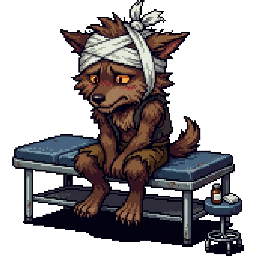

Rounds with Van Helsing
Welcome to Transylvania, doctor. Tonight you begin your training, and the patients are... unusual.
Use → (or Next) to advance and to reveal points one at a time. F = fullscreen.
Your Apprenticeship
"Medicine for monsters," Van Helsing says, "is still medicine. The hard part was never the fangs. It is the decisions."
- His clinic treats vampires, werewolves, the newly-risen, and stranger folk still.
- Each case will pull you in several directions at once.
- Tonight he teaches you not a rulebook, but a way of reasoning: the four principles of bioethics.
Before We Begin
Five quick gut-checks, with no right answers. Just say where you stand. We will come back to them at the end to see whether the night changed your mind.
A competent adult should be free to refuse treatment, even if refusing could seriously harm them.
It can be right to override someone's wishes for their own good.
A doctor should keep a patient's confidences no matter what.
When a treatment is scarce, the fairest approach is to give it to whoever will benefit most.
Doing the right thing should always leave you with a clear conscience.
Start With What We All Know
"Before the special rules of medicine," says Van Helsing, "there is the common morality: the rules every morally serious person already accepts."
- Don't kill. Don't cause needless suffering. Don't steal or deceive.
- Keep your promises. Treat people fairly.
- These are not the invention of any one culture. They are shared across all of them.
Why Medicine Needs More
The common morality is true but thin. The clinic adds pressures it never anticipated:
- Vulnerability: patients are frightened, in pain, sometimes barely themselves.
- Power: you hold knowledge, instruments and authority that they lack.
- Special roles: a healer takes on duties an ordinary villager does not.
- So bioethics specifies and extends the common morality for medicine.
- That approach has a name: principlism. Start from morality everyone shares, then work it out for the clinic.
From Shared Norms to Clinical Principles
The universal norms all morally serious people share.
"Do not cause needless harm" is true everywhere, and it does not tell you how to dose wolfsbane.
That same morality specified for medicine's roles and powers.
"Weigh the benefits and harms of this treatment for this patient" is built for the bedside.
Check Your Understanding
A code unique to doctors that outsiders never share.
The basic moral norms that all serious people share.
Whatever moral rules a given culture happens to hold.
The rules a country's laws happen to enforce right now.
The Four Principles
Van Helsing holds up four fingers. "These are your compass. Learn them as equals. None of them outranks another."
- Respect for autonomy: honor a patient's own informed choices.
- Nonmaleficence: do no harm.
- Beneficence: act for the patient's good.
- Justice: share benefits and burdens fairly.
1 · Respect for Autonomy
A competent patient gets to make their own informed decisions, including ones you would advise against.
- The Count, fully lucid, refuses your daytime-shielding regimen. He understands the risks.
- Respecting autonomy means informed consent: disclosure, understanding, and a voluntary choice.
- It is his life and his body. It is not yours to commandeer.

2 · Nonmaleficence
Primum non nocere: first, do no harm. Never let a treatment wound worse than the disease does.
- However tidy it would be, you do not prescribe silver to Ilinca, your werewolf patient. It would poison her.
- Nonmaleficence forbids inflicting harm and reckless risk.
- It's the floor beneath everything else you do.
3 · Beneficence
Nonmaleficence says do not harm. Beneficence says actively do good, and weigh that good against what it costs.
- Offering the Count synthetic blood spares him suffering and keeps others safe too.
- Beneficence always carries a balance: benefits versus risks, burdens, and cost.
- Meaning well is not enough. To help well, you have to weigh.
4 · Justice
Justice asks: are benefits and burdens shared fairly?
- This week's synthetic blood is scarce. The Count needs it, and so does Sanda, the village midwife, bleeding after a fall.
- Justice governs who gets the scarce good, and on what fair basis.
- No patient counts for more simply because they're powerful, or frightening.
All Equal, All Prima Facie
"Here is the part students forget," Van Helsing warns. The principles are prima facie, a term borrowed from the philosopher W. D. Ross.
- Each one binds you unless it collides with another that, here and now, outweighs it.
- There is no fixed ranking. Autonomy does not automatically beat beneficence, and beneficence does not automatically beat autonomy.
- Which one yields depends on the case, argued out. It does not depend on a standing hierarchy.
Name the Four
Respect for autonomy — honor competent, informed choices
Nonmaleficence — do no harm
Beneficence — act for the patient's good
Justice — distribute benefits and burdens fairly
Confidentiality — keep what a patient tells you private
Informed consent — get permission before you treat anyone
What "Prima Facie" Means
each holds firm unless another outweighs it in a clash.
one principle always outranks the others, whatever the case.
they only matter when a patient asks about them.
they are rules of thumb you may set aside whenever you like.
The Principles Are Abstract
"'Respect autonomy,'" Van Helsing says dryly, "is a fine motto. It is useless at two in the morning with a thrashing patient."
- The principles are general. Real cases are specific.
- A bare principle rarely tells you what to do with this patient, tonight.
- So before you can apply a principle, you often have to sharpen it.
Specification
Philosopher Henry Richardson called this move specification: narrowing an abstract principle to fit a context.
- Abstract: "Respect the patient's autonomy."
- Specified: "Obtain Ilinca's informed consent before giving wolfsbane, disclosing that it blocks transformation for three nights."
- A good specification guides action, and it often heads off conflicts before they start.
Two Different Moves
Don't confuse the two things you'll do with principles.
Take one abstract principle and spell out what it requires here.
"Respect autonomy" → "get Ilinca's informed consent before wolfsbane."
When two specified principles still conflict, weigh their relative strength.
Her refusal (autonomy) vs her repeated injuries (beneficence): which wins, here?
Say It Back
Turning "respect autonomy" into "get informed consent before giving wolfsbane" is called
specification.
It takes an abstract principle and makes it
concrete enough to guide action.
When Principles Still Collide
Specify all you like. Sometimes two principles still pull against each other in the same case, and then you must weigh and balance.
- Balancing is judgment, not arithmetic. No formula spits out the answer.
- But it isn't a free-for-all either. Overriding a principle has to be earned.
- Beauchamp and Childress give conditions any justified override must meet.
Conditions for a Justified Override
To justifiably infringe one prima facie principle for another, you should be able to show:
- Good reasons: the overriding principle really is weightier here.
- Realistic prospect: the override will actually achieve its aim.
- Necessity: no morally preferable alternative is available.
- Least infringement: you intrude as little as the goal allows.
- Minimize harm and act impartially throughout.
A Hard Case: Paternalism
Ilinca is hooked on moon-nectar, the very drug that drives the transformations injuring her. She is lucid, she refuses to give it up, and she harms nobody else.
She is competent and informed. What she puts in her own body is her choice.
Restricting her moon-nectar overrides a lucid refusal.
The drug leaves her gravely and repeatedly injured. The addiction also clouds the very choice she is making.
Limiting it for her own good, against her wishes, is paternalism.
Tune the Case
Five versions of Ilinca. Switch on only what that case supports, then check your reading. Two switches are not conditions at all.
The harm falls on Ilinca alone.
Addiction makes her refusal less than free.
Gentler measures have already failed.
You would set the same limit for the Count.
She will thank you once she is well.
Her pack has asked you to step in.
Ilinca is addicted to moon-nectar, the drug that triggers the transformations injuring her. A taper she agreed to has failed twice. She is lucid, and she endangers no one else.
Ilinca takes moon-nectar twice a year, at the solstices, and could stop tomorrow. She just does not want to. The transformations injure her just as badly.
Ilinca is addicted and badly hurt. You have offered her no taper, no counseling, nothing. You reach straight for the restriction.
Ilinca is addicted and badly hurt, and you would restrict her supply. The Count is just as dependent on his cordial, and you would not touch it.
Ilinca is addicted and badly hurt. She also tells you that when the change takes her this month, she means to go for Sanda, and she knows what she is saying.
What Justifies an Override?
You have good reasons that the other principle is weightier here
No less-infringing alternative is available
You infringe as little as the goal requires
You act impartially, as you would for any patient
You are confident the patient will thank you for it afterwards
The principle you are overriding is the least important of the four
Another Fault Line: Duty to Warn
In confidence, the Count tells you he intends to feed on Sanda the midwife tonight. Now the danger is to someone else.
What a patient tells you in confidence is, by default, protected.
Break it lightly and no patient will ever confide the truth again.
When a third party faces serious, specific danger, you may have to warn.
The real-world landmark is Tarasoff (1976), a case in which a therapist's patient named a woman he then killed. The court held that the duty of confidentiality had ended where the danger to her began. That is harm to others, not paternalism.
Decision Point: The Final Death
Not graded. There is no skipping the weighing, so here is the weighing.
Her autonomy. She is competent, settled, and it is her life to end.
Nonmaleficence. Whatever else you do, you do not become the cause of a death.
Beneficence. What matters is which outcome is actually better for her.
The Fault Lines Multiply
Most great debates in bioethics live where two principles meet:
- Capacity and consent: the Creature, newly risen, cannot grasp his options. Do you honor a choice he cannot really make, or find a surrogate?
- Justice and triage: when the synthetic blood runs short, does the Count get it or does Sanda, and on what fair rule?
- End-of-life autonomy: the Countess asks you to help her reach her "final death."
- Each of these pits real principles against each other. There is no skipping the weighing.
Reason Through It
Assess his capacity, then involve an appropriate surrogate.
Treat his refusal exactly as you would a fully competent patient's.
Decide for him by maximizing total village welfare.
Have whichever relative is nearest sign for him right away.
The Cost That Remains
Say you were right to override a principle. Van Helsing stops you: "Being justified is not the same as being clean."
- The principle you overrode did not vanish. What it leaves behind is called moral residue.
- You may owe residual duties: disclose what you did, apologize, follow up, make amends.
- The ache you feel afterwards is a signal rather than a malfunction. Clinicians call it moral distress.
Both Things Are True
Every condition was met, so overriding the principle was defensible.
Restricting her moon-nectar to stop grievous self-injury was the right call.
The overridden principle still makes a claim on you.
You owe her honesty, support through withdrawal, and a plan she has agreed to. And you should feel it.
What Residue Asks of You
Since you were justified, nothing further is owed.
You acted wrongly and should reverse the decision.
Though justified, you still owe regret and follow-up.
What remains is only a feeling, and it asks nothing of you.
Name All Four
Van Helsing holds up four fingers one last time. "Before dawn. Which principle is each of these?"
Honoring the Count's informed refusal is respect for
autonomy.
Refusing to prescribe silver to Ilinca, because it would poison her, is
nonmaleficence.
Offering the Count synthetic blood to spare him suffering is
beneficence.
Deciding fairly whether the last vial goes to him or to Sanda is
justice.
Revisit Your Instincts
Here is where you started. Re-rate each one and see whether anything has shifted. Staying put is fine; the question is whether you can now say why.
You've Earned the Coat
Dawn over the mountains. Van Helsing nods. "You have the method now. Use it well."
- Common morality: shared norms, specified and extended for the clinic.
- Four principles: autonomy, nonmaleficence, beneficence and justice, equal and prima facie.
- Specify, then weigh, and override only when every condition holds.
- Moral residue: even when you are right, honor what is still owed.
Visit every slide and answer every question correctly to fill the bar and complete your training.